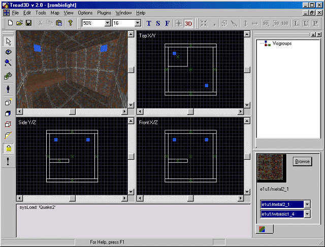
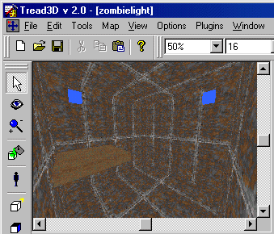
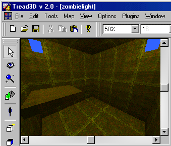
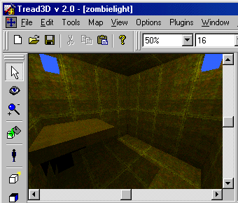
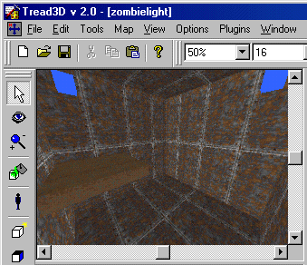

This is a walk-through as to how to use the ZombieLight Plugin.
Before starting this tutorial you should first get acquainted with the basics of the "Tread3D" editor; the screen and the various commands that are available.
As in the previous tutorials start "Tread3D".
Lets make a very basic room that is 256x256x256 units.
Now at one corner of the ceiling add a "Light No Source" using the color "yellow".
Now at the other corner of the ceiling add a "Light No Source" using the color "yellow".
Also, place an obstruction under one of the "yellow" lights.
Your screen should look like the one below.

Now click on the "Plugins" menu and scroll down to "ZombieLight".

You will see three choices and these are:
Show Light (This will allow you to see only light from light entities in the 3D View)
Shadows (This will allow you to see light shadows in the 3D View after you initiate a "Preview")
Build Light Preview (This will allow you to see full lighting effects in the 3D View)
Lets toggle the "Show Light" option first while looking at the 3D view.
Your 3D view screen should look like the one below.

You will now notice that the 3D view screen is very bright.
The lighting displayed is as if the "Ambient" lighting were set to "Full-bright".
Now you could toggle the "Shadows" option at this time but nothing will happen.
Let's now toggle the "Build Light Preview" option while looking at the 3D view.
Do not check the "Shadows" or "Show Light" options yet.
Your 3D view screen should look like the one below.

You will notice that your room is flooded with yellow light.
But there is no shadows.
Let's now toggle the "Build Light Preview" option while looking at the 3D view.
This time toggle "on" the "Shadows" option.
Your 3D view screen should look like the one below.

You will notice that your room is flooded with yellow light and now there are shadows.
To toggle off the "Preview" just "click" on the "Show Light" option.
Let's toggle the "Show Light" option "off" while looking at the 3D view.
Your 3D view screen should look like the one below.

Now some important notes:
The "Show Light" option will toggle on/off the "Build Light Preview" displayed in the 3D View Window.
The "Shadows" choice is an input before you use the "Build Light Preview" option.
Thats all there is to it.
What you have done is "Previewed Color Lighting in the 3D view".
Now resave your work.